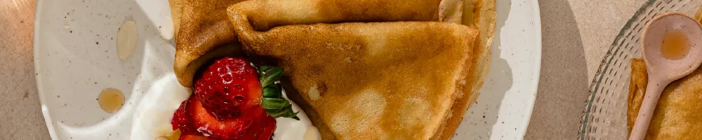

Crêpes

A French Classic
Crêpes are one of the easiest and most loved French dishes. It's one of the first things I learned how to cook as a kid and every time I make them, it always reminds me of home. Everybody loves them whether you serve them simply or dressed up!
Ingredients
- 1 2/3 cups plain or all purpose-flour
- 3 Tbsp caster sugar
- 1/4 tsp kosher salt
- 3 large eggs
- 2 cups whole milk
- 1/3 cup water
- 2 Tbsp vegetable oil
- 45g unsalted butter
Steps
- Sift flour into a large mixing bowl. Add sugar and salt, then whisk to combine.
- Make a well in the centre and add the eggs. Whisk gently and only mix in a bit of the flour. You can’t blend all the flour with just the eggs yet, so just mix in enough to make a thick paste.
- Gradually add the milk, whisking between each addition to create a smooth batter with no lumps.
- Whisk in the water and oil until the batter is glossy and pourable. When you dip a spoon in, it should coat the back lightly. Not too thick, not too runny.
- Cover and rest for 1 hour at room temperature.
- Heat a 24cm / 9.5" non-stick crêpe pan over medium-high heat (medium if your stove runs hot). If you don’t have one, any good non-stick pan will work, just adjust how much batter you pour in depending on the size, so it spreads nicely without being too thick or thin.
- Melt about 1/2 tsp butter, then wipe it off with a paper towel, you want just a little of butter left, no visible pools.
- Pour the batter – Using a ladle, scoop up ¼ cup of batter, lift the pan off the heat, ladle most of the batter into the centre, and immediately swirl the pan so the batter coats the surface in a thin, even layer. Still while swirling, use the rest of the batter to fill up the empty spots before it sets. Tilting quickly gives you uniform crêpes.
- Cook for 45 seconds to 1 minute until the underside is lightly golden and flip using a long spatula and cook the other side for about 30 seconds. (Note 4 & 5)
- Slide onto a plate, then repeat, adding butter each time.